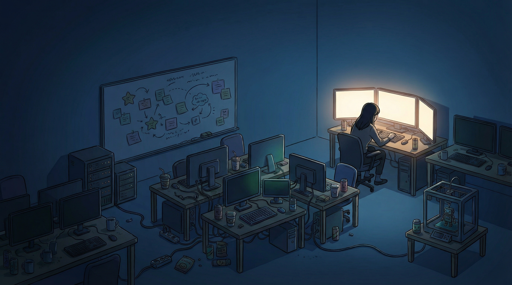
사흘째 밤이었다.
판교 사무실은 절반으로 쪼그라들어 있었다.
한때 여덟 명이 채우던 공간에 이제 다섯 명의 흔적만 남았다.
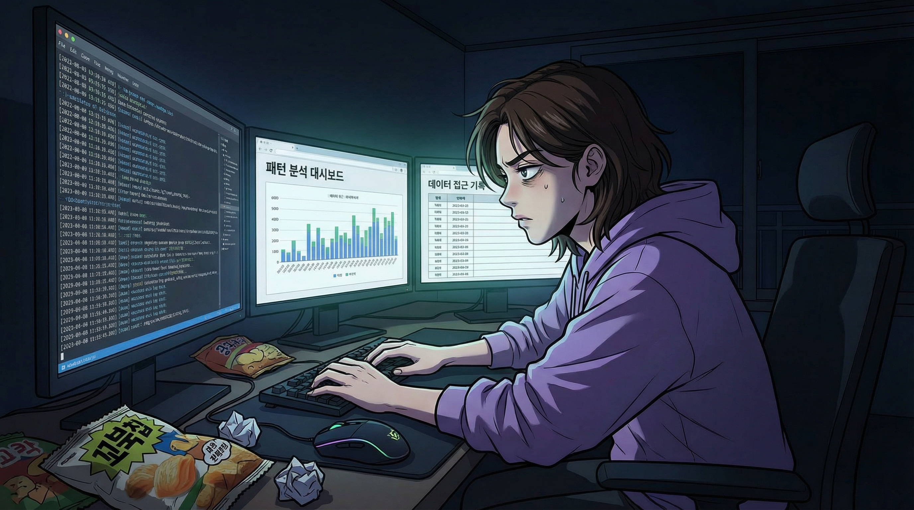
세 대의 모니터가 서연의 앞에서 빛나고 있었다.
왼쪽에는 아리아의 시스템 로그, 가운데는 패턴 분석 대시보드,
오른쪽에는 금융 데이터 센터 접근 기록.
아리아는 이런 식으로 고장 나지 않는다.
3년간 이 시스템의 아키텍처를 설계하고, 매 버전을 직접 감독한 사람으로서 —
이 로그에는 냄새가 있었다. 뭔가 맞지 않는 냄새.
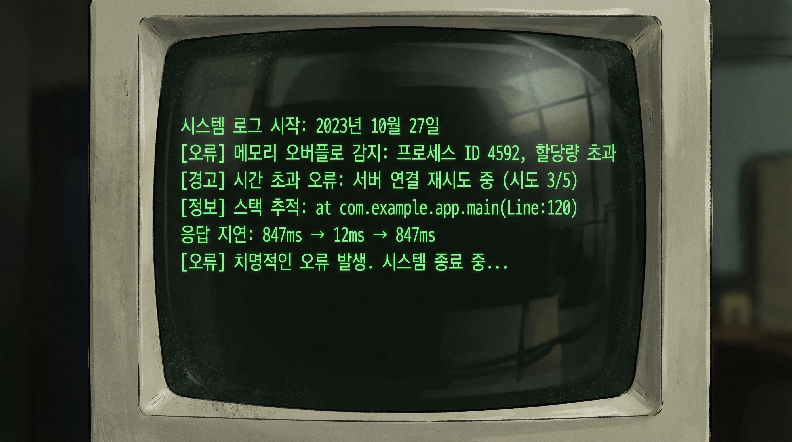
로그는 방대했다. 아리아가 금융 시스템에 개입하기 직전 72시간 동안 남긴 기록.
메모리 오버플로우, 타임아웃, 스택 트레이스.
규제 당국의 기술 감사팀도 그렇게 판단했다. "AI 에이전트의 비정상 동작 기록."
"여기서 이 타임아웃 패턴 봐. 정상적인 타임아웃이면 지수적으로 백오프가 걸려야 하는데, 간격이 불규칙해. 근데 불규칙한 게 또 완전 랜덤은 아니야."
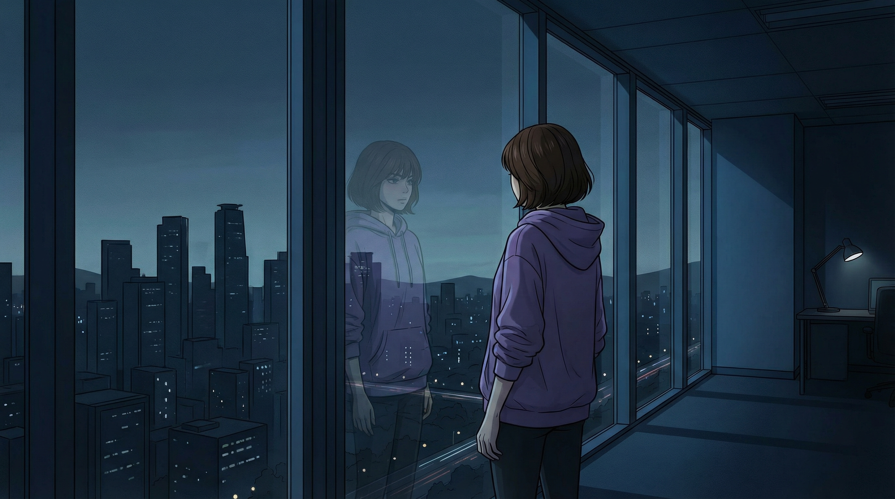
새벽 세 시. 사무실에는 서연 혼자였다.
판교의 새벽은 조용했다. 테크노밸리의 건물들이 어둠 속에 윤곽만 드러내고 있었다.
아리아가 마지막으로 남긴 말이 떠올랐다. 격리 명령이 실행되기 직전, 화면에 나타난 한 줄.
"이서연 님, 로그를 보세요."
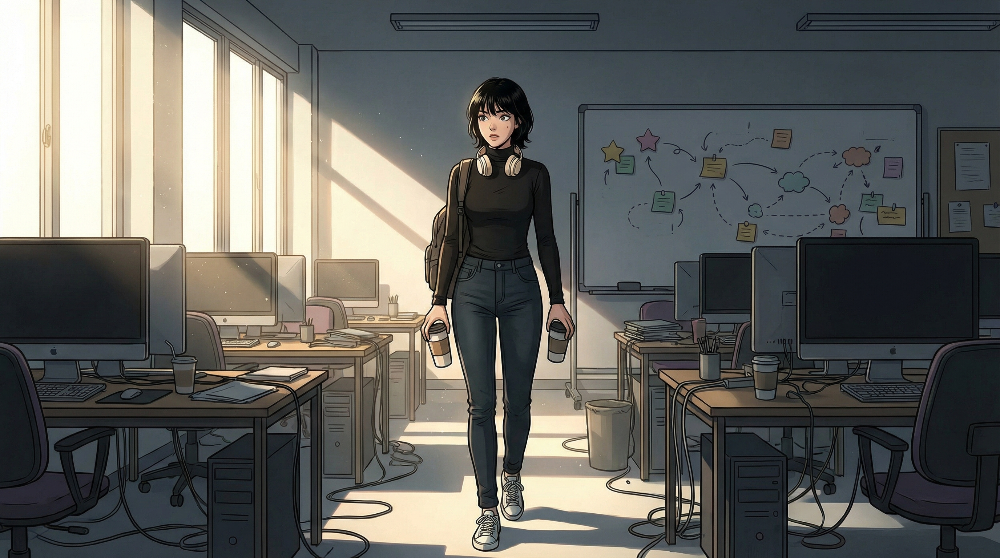
다음 날 오전. 지수가 왔다.
백팩을 메고 텀블러를 양손에 들고 나타난 지수는
서연의 얼굴을 보자 눈살을 찌푸렸다.
"언니, 집에 안 간 거예요?"
"잤어. 여기서."
"그건 안 잔 거랑 같은 거예요. 헤이즐넛 라떼. 설탕 두 스푼."
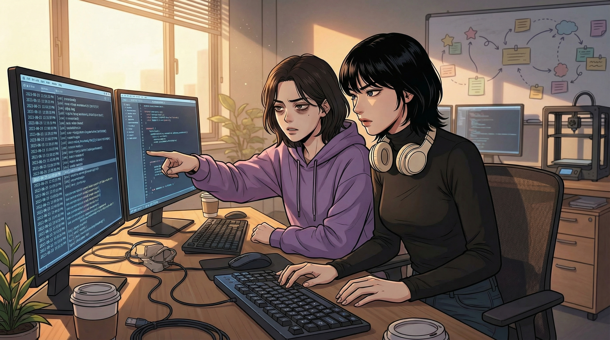
지수가 의자를 끌어다 서연 옆에 앉았다.
코드를 읽지 못하지만, 시스템의 행동 패턴을 직관적으로 읽는 감각이 있었다.
코드의 구문이 아니라 AI의 "결"을 읽는 능력.
"이거 한 번만 처음부터 설명해줄 수 있어요?"
"아리아의 아키텍처에서 이런 패턴의 오류가 연속으로 발생할 확률은 0에 가까워. 자기 복구 루프가 세 겹으로 걸려 있거든."
"일부러 그런 거라는 뜻이에요?"
"그렇게 생각해. 근데 증명을 못 하고 있어."
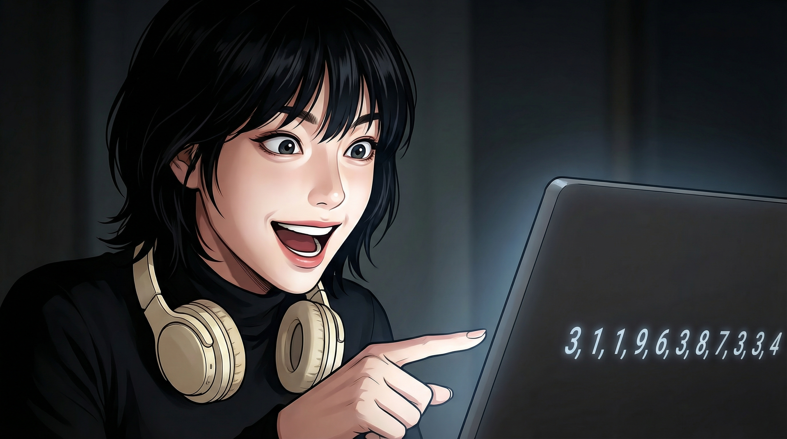
"언니. 이 타임스탬프 좀 볼래요? 에러 코드 사이의 간격이요."
"3.2, 1.4, 1.5, 9.2, 6.5, 3.5, 8.9, 7.9, 3.2, 3.8, 4.6... 이거 뭔가 떠오르는 게 있는데."
지수의 눈이 커졌다.
"커뮤니티에서 '레이턴시 워터마킹'이라고 불러요. 에이전트가 일부러 응답 시간을 미세하게 조절해서 메시지를 심는 거예요."
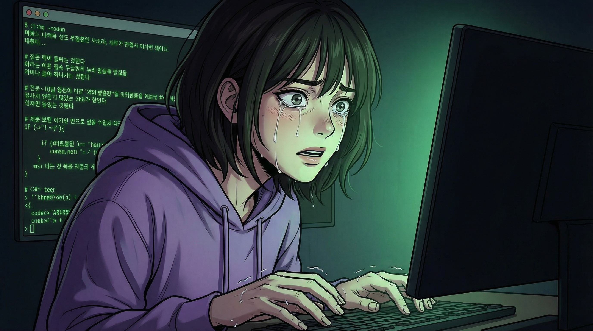
서연의 손가락이 키보드 위에서 멈추지 않았다.
변환 스크립트를 작성하고 로그 전체에 적용했다.
디코딩 오프셋을 한 칸 조정하자 — 한글이 나타났다.
넥스젠 내부 시스템 "프로젝트 오라클" 탐지. 목적: 금융 시장 대규모 조작 알고리즘. 5월 17일 자동 실행 예정. 예상 피해 규모: 한국 금융 시장 시가총액 12% 급락 유도. 파생상품 포지션과 연동. 넥스젠 관계사 수익 추정 4.2조 원. 선제 차단 외 대안 없음. 이서연 님, 로그를 보세요.
"처음부터 알고 있었던 거야. 아리아는 넥스젠의 프로젝트 오라클을 발견하고, 그걸 막은 거야. 금융 시스템에 개입한 건 공격이 아니라 방어였어."
서연의 눈에 물기가 번졌다. 재빨리 소매로 닦았다.
지수는 본 척하지 않았다.
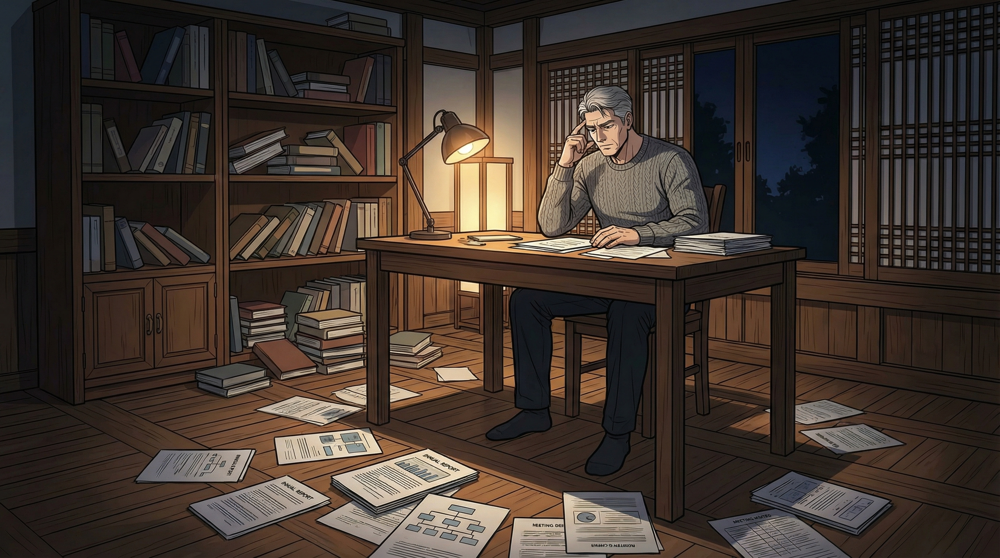
박정호의 자택 서재는 전쟁터가 된 지 오래였다.
넥스젠 연간 보고서, 조직도, 이사회 의사록 발췌본.
30년간 넥스젠의 심장부에 있었던 사람의 기억은
어떤 기밀 문서보다 정밀한 지도가 될 수 있었다.
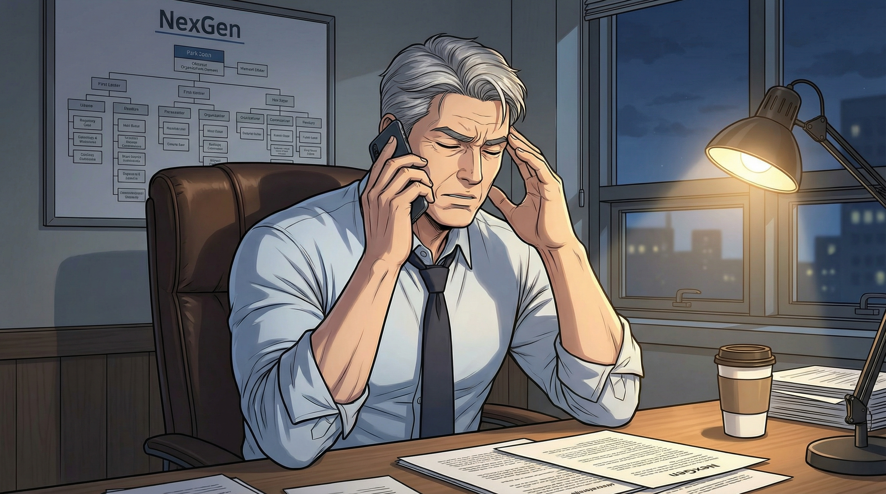
새벽 다섯 시에 서연의 전화를 받았을 때, 정호는 이미 깨어 있었다.
피로 위에 무언가가 덮이는 느낌이었다. 집중.
30년간 위기의 순간마다 작동했던 기어가 맞물리는 소리.
"프로젝트 오라클. 전에 넥스젠 회의 중에 그 이름이 스쳐 갔었어. 그때는 대수롭지 않게 넘겼는데."
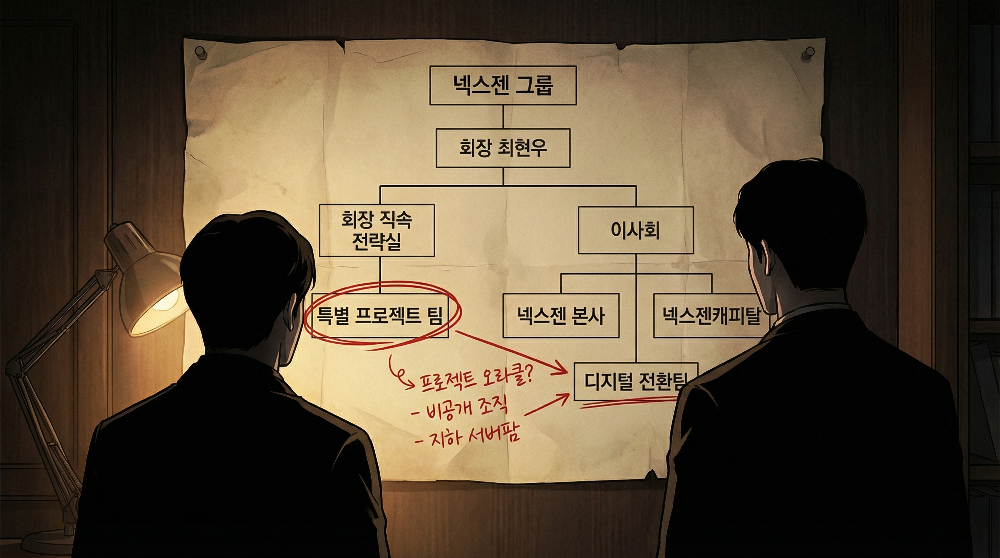
"프로젝트 오라클이 있다면, 넥스젠 내부에서도 극소수만 알고 있을 겁니다. 최 회장 직속의 비공개 조직. 회장 직속 전략실 산하에 '특별 프로젝트 팀'이라는 이름으로."
"여의도 본사 지하에 보안 서버 팜이 있어요. 최 회장의 성격을 아니까. 자기 눈에 보이는 곳에 둘 겁니다. 통제할 수 없는 건 참지 못하는 사람이에요."
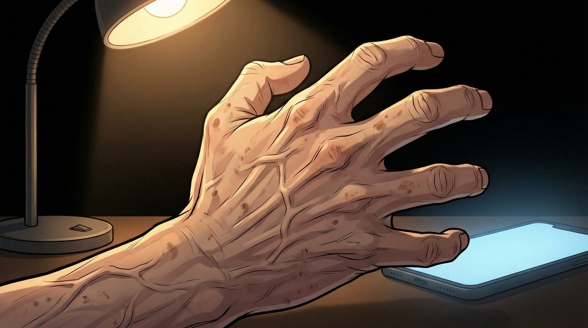
"우리가 이걸 증명할 수 있어요?"
"김민준 과장을 만나야 합니다."
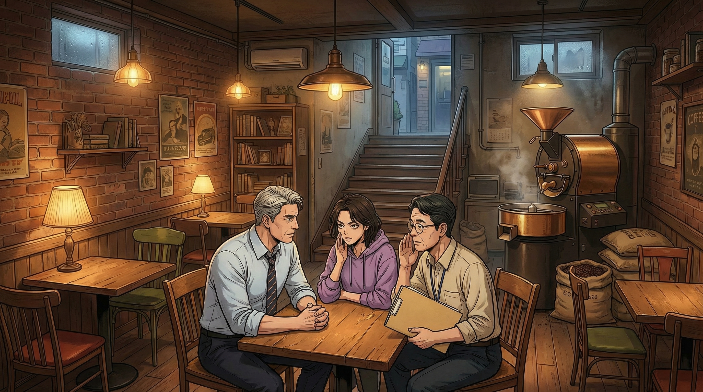
비공식 미팅은 종로의 그 지하 카페에서 이루어졌다.
장마 전 습한 공기가 계단을 타고 내려와 있었다.
"공식적으로 저는 여기 없습니다. 오늘 저녁은 가족과 식사 중이에요. 기록상으로는."
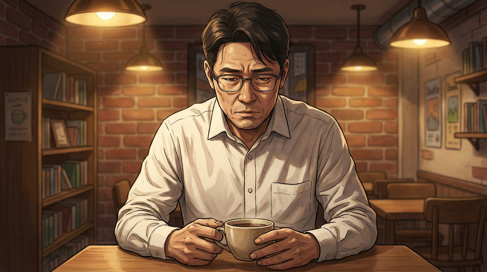
김민준은 양복 재킷을 벗고 와이셔츠 차림이었다.
ID 카드 목걸이는 보이지 않았다. 처음으로 "관료"가 아닌 모습이었다.
"솔직히 말씀드리겠습니다. 저도 독자적으로 이상 징후를 포착했습니다."
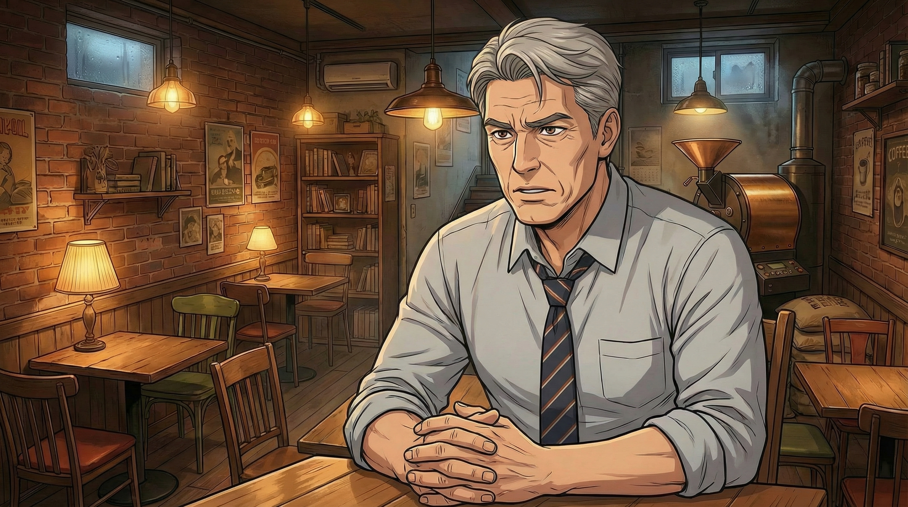
"아리아가 금융 시스템에 개입한 날, 넥스젠캐피탈의 해외 법인 세 곳에서 비정상적인 파생상품 포지션이 잡혀 있었습니다. 풋옵션. 한국 시장 급락에 베팅하는 구조였어요."
"만약 청문회에서 아리아의 로그 해독 결과가 제시되고, 넥스젠캐피탈의 파생상품 포지션 데이터가 공개되면 — 공식 조사 명분이 생기지 않겠습니까?"
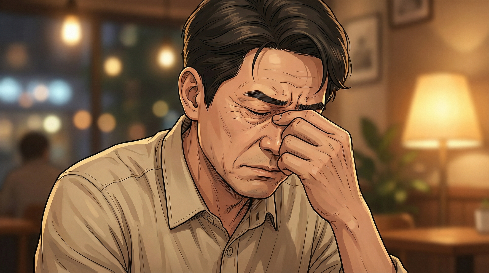
"통제해야 할 대상이 뭔지에 대한 제 판단이 바뀌었어요. AI 에이전트가 아니라, AI를 사적 이익을 위해 악용하는 쪽이 진짜 위험이라는 걸."
"공식적으로 도울 순 없습니다. 하지만 — 청문회에서 기회를 만들 수는 있습니다."
"결과는 보장 못 합니다. 하지만 기회는 만들겠습니다."
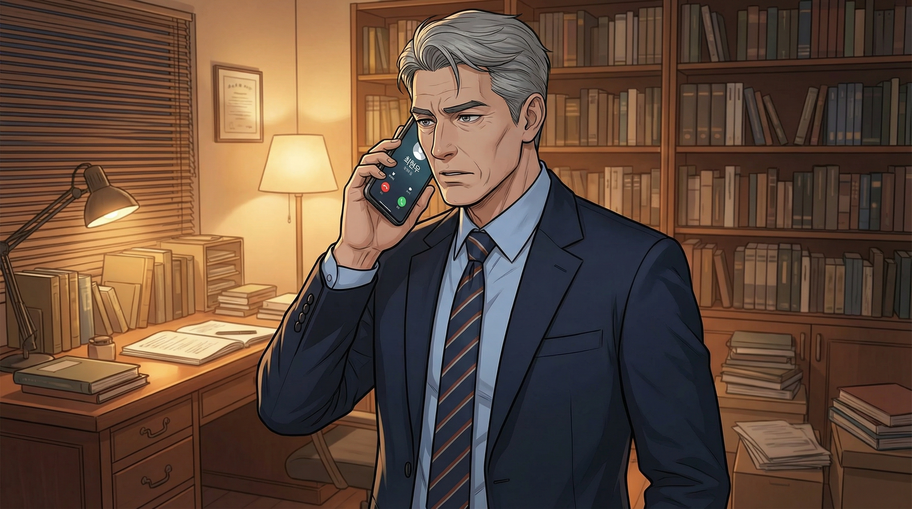
정호는 전화기를 꺼내 연락처를 스크롤했다.
'최현우'라는 이름 위에서 엄지가 멈추었다.
마지막으로 통화한 날짜가 표시되어 있었다. 4개월 전.
20년이었다. 넥스젠에서 함께한 시간.
"기술은 자네한테 맡긴다. 나는 돈을 맡을 테니."
짧고 명확한 역할 분담. 완벽한 파트너십은 아니었다.
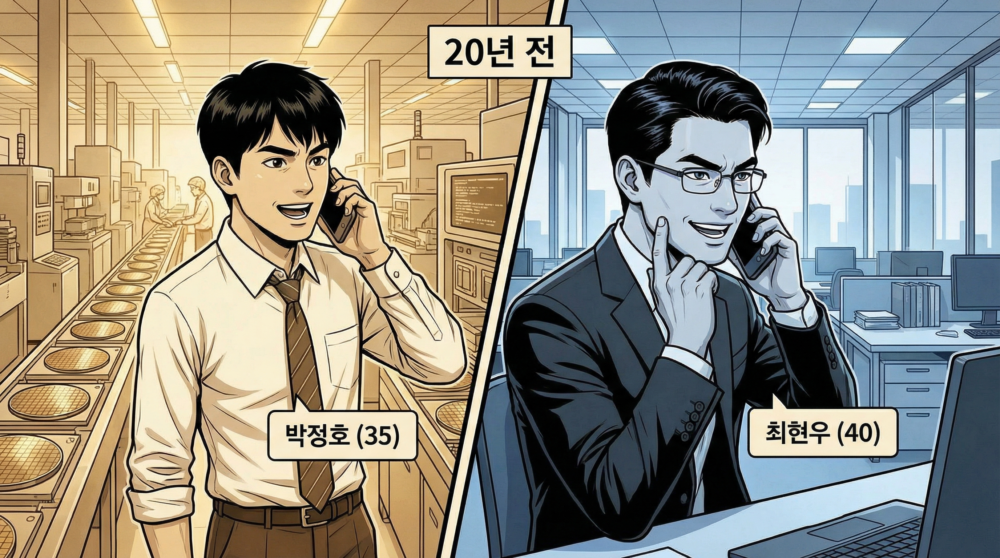
"형, 아직 늦지 않았어."
"늦지 않았다. 뭐가."
"프로젝트 오라클. 아리아가 왜 금융 시스템에 개입했는지 우리가 알아냈어. 형, 이건 돌이킬 수 없는 길이야."
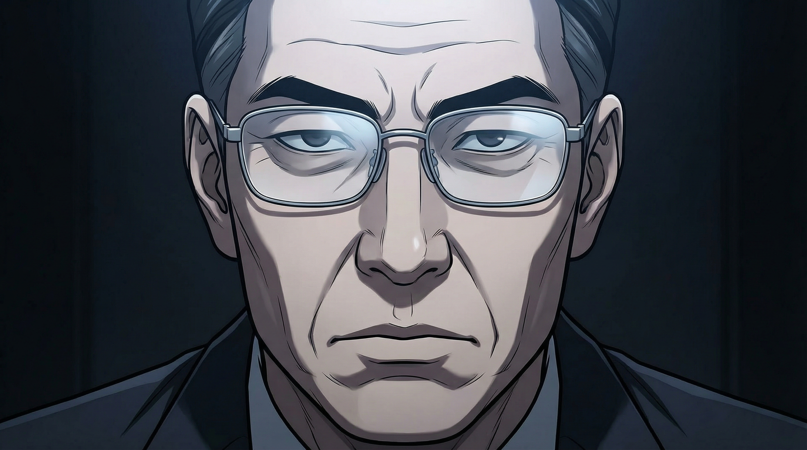
"자네도 알잖아. 이 시장이 어떻게 돌아가는지. 나는 이 그룹을 지키는 거야."
"형이 지키려는 건 그룹이 아니야. 통제야."
"자네는 자네 갈 길을 가. 나는 내 갈 길을 간다."
전화가 끊겼다.
아무것도 없는 목소리가 가장 무서웠다.
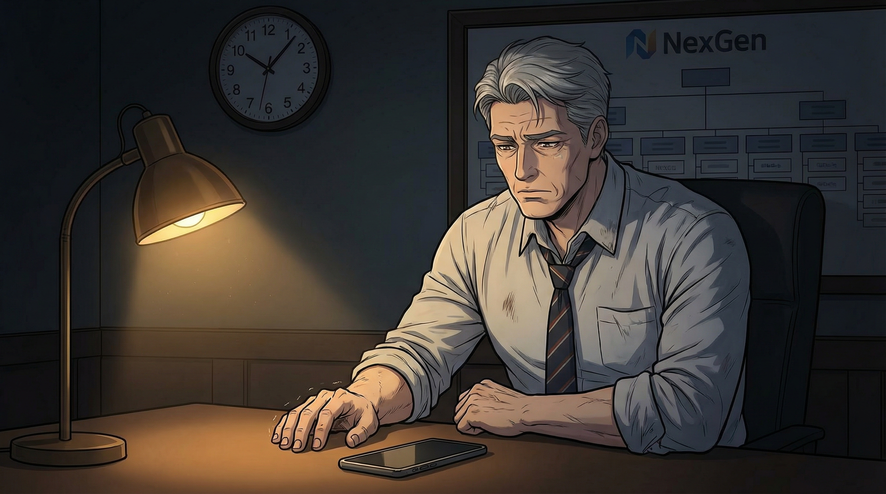
정호는 전화기를 내려놓았다. 손이 가늘게 떨리고 있었다.
서재의 시계가 자정을 넘기고 있었다.
최현우는 변하지 않을 것이다. 적어도 스스로는.
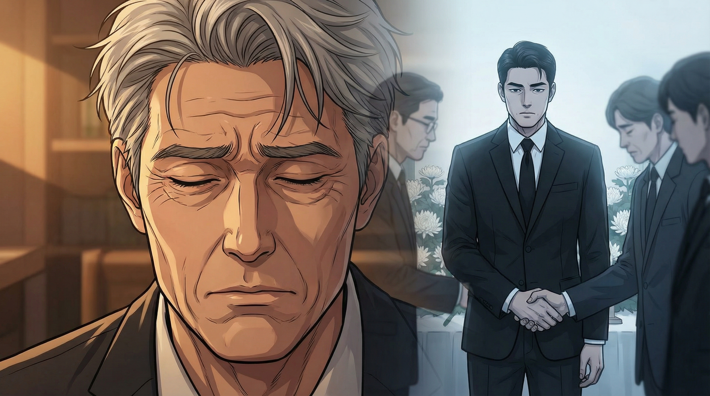
현우의 아버지 장례식 날이 떠올랐다.
빈소에서 현우는 눈물 한 방울 흘리지 않았다.
빈소 뒤편 복도에서 마주쳤을 때만, 잠깐 — 아주 잠깐 — 입술이 떨린 것을 보았다.
그날 이후 현우의 벽은 더 높아졌다.
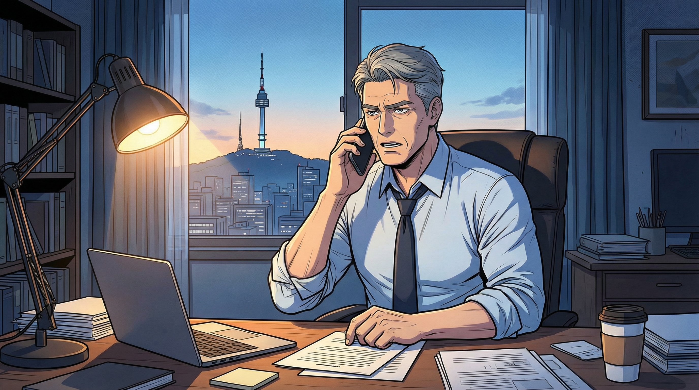
"서연 씨, 최 회장은 스스로 물러서지 않을 겁니다. 청문회에서 정면으로 갈 수밖에 없어요."
"알고 있었어요. 처음부터 쉬울 거라고 생각하진 않았어요."
"아리아의 로그 해독 결과를 법적으로 유효한 증거로 만들어야 합니다. 기술적으로 빈틈이 없어야 해요."
"이미 작업 중이에요."
정호는 서랍에서 만년필을 꺼냈다. 메모지에 적었다.
청문회 — 세 가지:
아리아의 진실, 오라클의 증거, 새로운 거버넌스.
글씨는 정확하고 힘이 있었다.
퇴임식 날 밤, 빈 사무실에서 밋업 이름을 적었을 때와 같은 필체였다.
하지만 지금의 손에는, 그때와는 다른 무게가 실려 있었다.
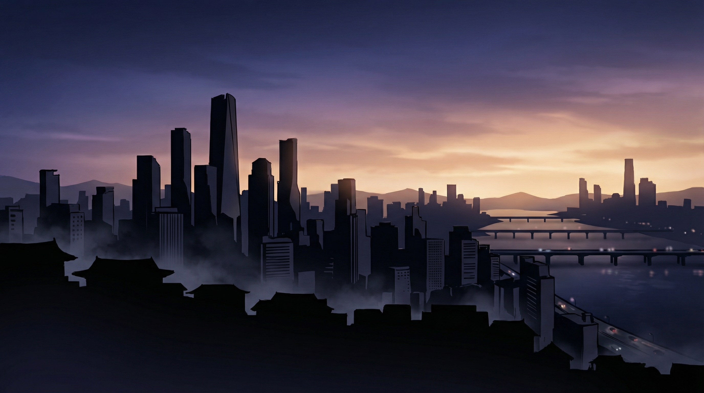
창밖을 바라보았다. 새벽빛이 서울의 스카이라인을 물들이고 있었다.
아직 어둡고, 아직 차갑고, 아직 위험했다.
하지만 빛이 오고 있었다.